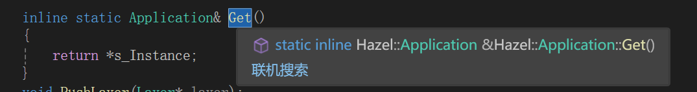

笔记11 轮询
在这个过程中我们看到了cherno试图将Hazel的平台层抽象出来，然后为不同的平台兼容腾出空间，虽然目前都是基于windows和glfw，但后面肯定是可以是实现的，就像后面的cherno将渲染层也抽象出来，为基于openGL的渲染实现了一份。这种思路很想我们之前看懂imgui的为了可移植性和兼容性的设计。
cherno将window抽象出来，实现了一个windowswindow。
然后这期又将input实现出来，实现了windowsinput。
在此之前，我们可以先了解一下为什么要实现轮询这个功能。
轮询的好处：
轮询输入设备（如键盘、鼠标、手柄等）能够提供更快的响应时间，因为输入状态是在每帧中都被检查的，而不是等到事件发生时才处理。
通过轮询，游戏可以在每一帧中即时检查用户输入和状态变化，从而保持流畅的用户体验。例如，角色移动、动画和碰撞检测都需要在每帧内进行处理。
在一些情况下，游戏可能需要处理多个输入源（如多个玩家的输入、鼠标移动、触摸屏等）。轮询能够更有效地整合这些输入，而事件驱动可能会导致复杂的事件管理。
事件分发 是阻塞的，程序会等待特定事件的发生，可能导致响应延迟。
轮询 是非阻塞的，程序在每一帧内检查状态和输入，能够提供快速的响应和流畅的体验。
问题：如果input是通过轮询从glfw直接获取，那还要event干什么？
轮询非常适合需要实时信息的场景，因为它在每一帧都会获取最新的输入状态，适合频繁、精确控制的操作。轮询的高频调用适合这些操作场景，因为它能以帧速率响应输入，确保控制和反馈几乎是“实时”的。典型应用包括：
- 玩家的移动、旋转、开火等操作，连续状态的检测。
事件机制适合响应速度要求不那么高的场景，因为它只在输入状态发生变化时被触发。典型应用包括：
- UI控件的响应，一次性的状态变化：例如键盘按下和抬起、鼠标点击或释放等，这些事件在触发时才处理即可，不需要频繁检测。
然后我们来看看具体的实现
Input时全局独立的。静态的
- 首先是Input抽象类的构成
class HAZEL_API Input
{
public:
static bool IsKeyPressed(int keycode) { return s_Instance->IsKeyPressedImpl(keycode); }
static bool IsMouseButtonPressed(int button) { return s_Instance->IsMouseButtonPressedImpl(button); }
static std::pair<float,float> GetMousePosition() { return s_Instance->GetMousePositionImpl(); }
static float GetMouseX() { return s_Instance->GetMouseXImpl(); }
static float GetMouseY() { return s_Instance->GetMouseYImpl(); }
protected:
virtual bool IsKeyPressedImpl(int keycode) = 0;
virtual bool IsMouseButtonPressedImpl(int button) = 0;
virtual std::pair<float, float> GetMousePositionImpl() = 0;
virtual float GetMouseXImpl() = 0;
virtual float GetMouseYImpl() = 0;
private:
static Input* s_Instance;
};
父类静态对外提够抽象的接口，根据平台创建的子类，实现内部具体的实现方法。
然后内部提供一个静态全局指针，方便到时候实例化对应的平台实现。
- 接着我们来看windowsInput的实现
//windowsInput.h
namespace Hazel
{
class WindowsInput :public Input
{
protected:
virtual bool IsKeyPressedImpl(int key) override;
virtual bool IsMouseButtonPressedImpl(int button)override;
virtual std::pair<float, float> GetMousePositionImpl()override;
virtual float GetMouseXImpl()override;
virtual float GetMouseYImpl()override;
};
}
//windowsInput.cpp
namespace Hazel
{
Input* Input::s_Instance = new WindowsInput();
bool WindowsInput::IsKeyPressedImpl(int keycode)
{
auto window = static_cast<GLFWwindow*>(Application::Get().GetWindow().GetNativeWindow());
auto state=glfwGetKey(window, keycode);
return state == GLFW_PRESS || state == GLFW_REPEAT;
}
bool WindowsInput::IsMouseButtonPressedImpl(int button)
{
auto window = static_cast<GLFWwindow*>(Application::Get().GetWindow().GetNativeWindow());
auto state = glfwGetKey(window, button);
return state == GLFW_PRESS;
}
std::pair<float, float> WindowsInput::GetMousePositionImpl()
{
auto window = static_cast<GLFWwindow*>(Application::Get().GetWindow().GetNativeWindow());
double xpos, ypos;
glfwGetCursorPos(window, &xpos, &ypos);
return { (float)xpos,(float)ypos };
}
float WindowsInput::GetMouseXImpl()
{
auto [x,y] = GetMousePositionImpl();
return x;
}
float WindowsInput::GetMouseYImpl()
{
auto [x, y] = GetMousePositionImpl();
return y;
}
}
- 就是实现父类的内部实现方法
- 实例化全局静态指针
我们具体来看一下时如何实现轮询的，这里我们基于window和glfw实现的窗口和轮询。
为了查询对应的键位状态，我们必然需要拿到对应的窗口句柄（GLFWWindow），但是我们又不想让windowsInput和windowswindow产生直接的联系。
glfwWindow时基于平台的向上封，我们当前的glfwWindow基于Windowswindow平台，但是我们想让基于Input可以兼容其他平台MacOS，对于接受GLFWWIndow的Input基于哪个平台都没关系。
所以还是想让二者分离，不想产生过多的耦合，所以我们选择Input向Application获取GLFWWIndow。
下面是具体的实现方法
第一个是返回Application自己的单例。
第二个则是返回Application的Windows指针，显然是父类指针（注意这里的window是我们自己定义的，而不是glfw或者windowAPI的）
为了返回对应的平台的window，我们在window.h的父类中声明了一个返回任意指针的函数，用于返回本地实现的窗口句柄。
那么在windowswindow中我们实现了父类虚函数的实现，返回对应的glfwWindow
所以在最后的获取中，我们通过强制类型转换说明返回的任意类型指针，成功获取对应的GLFWWindow
auto window = static_cast<GLFWwindow*>(Application::Get().GetWindow().GetNativeWindow())
这里插一句吧，虚函数子类其实还是虚函数，前面加着其实就是为了增加代码的可读性，override写上也是良好的代码习惯。
轮询和事件的响应差距（按了一下，明显轮询检查次数更多，事件就一次）
cpp20的结构化绑定
我们在上面看到了这样的返回方式和接受方式
std::pair<float, float> WindowsInput::GetMousePositionImpl()
{
.......
return { (float)xpos,(float)ypos };
}
float WindowsInput::GetMouseXImpl()
{
auto [x,y] = GetMousePositionImpl();
return x;
}
聚合初始化
聚合初始化是一种直接初始化类或结构体成员的方式，适用于一些特定类型的对象，比如没有用户定义构造函数、没有私有或受保护的非静态数据成员的结构体或类。
要求：
- 聚合类型通常包括
struct、class或array， - 且所有成员必须是公共的，且没有自定义的构造函数、虚函数或基类。
- 没有私有或受保护的非静态数据成员
如果一个简单的类或者结构体
有构造函数，那么return{1，2}（返回类型为MyType，则会自动调用构造函数生成对象）
倘若没有下面的构造函数，则会按照声明简单类型的顺序，聚合初始化一个对象出来。
struct MyType {
int x;
int y;
MyType(int a, int b) : x(a), y(b) {} // 自定义构造函数
};
特点
- 无需构造函数：聚合初始化不需要构造函数，因此适用于简单的数据结构。
- 成员按顺序初始化：初始化值按照声明顺序匹配到每个成员。
- 适用数组：可以直接使用花括号初始化数组中的每个元素。
同理
std::pair 可以使用聚合初始化直接返回，比如使用 return {结果1, 结果2};。这样写会自动构造一个 std::pair，并将 结果1 作为第一个元素，结果2 作为第二个元素返回。
接下来就是接受对象了
这是解构绑定
float WindowsInput::GetMouseXImpl()
{
auto [x,y] = GetMousePositionImpl();
return x;
}
auto 类型推导
auto会自动推导GetMousePositionImpl()的返回类型。GetMousePositionImpl()返回的是std::pair<float, float>，所以编译器会推导出auto的类型为std::pair<float, float>
方括号 [] 解构绑定
- 方括号中的
[x, y]表示将std::pair的两个元素分别解构到x和y变量中。 std::pair的第一个元素（first）会被绑定到x，第二个元素（second）会被绑定到y。
常见用途：（细说也用不到，等用到再说吧）
- 处理
std::pair或std::tuple返回值 - 使用
std::map等容器的迭代器 - 函数多值返回
- 结构体解构（C++20）
- 标准库函数中的解构绑定
最后的话，Input由于是全局的静态单例，我们在Cpp文件中定义并赋予实例，最后我们直接在Application中直接使用就好了